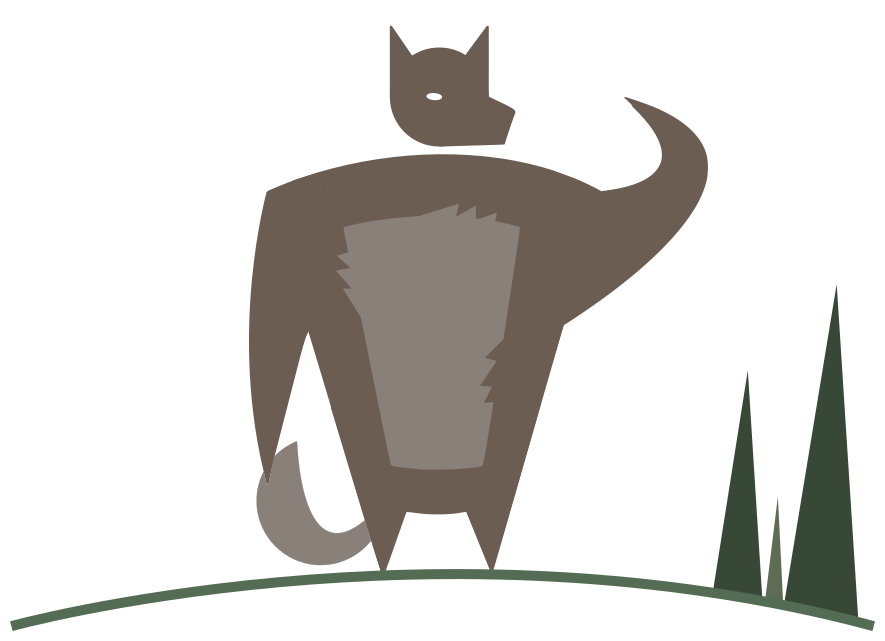
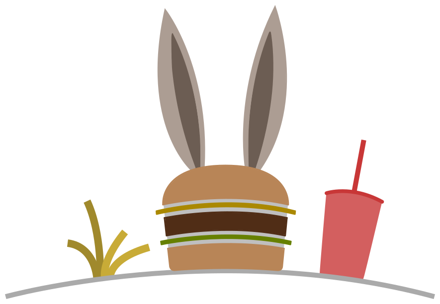
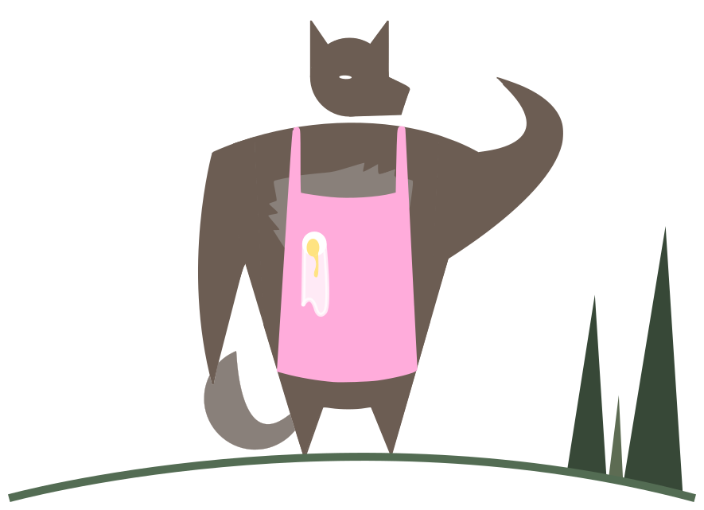
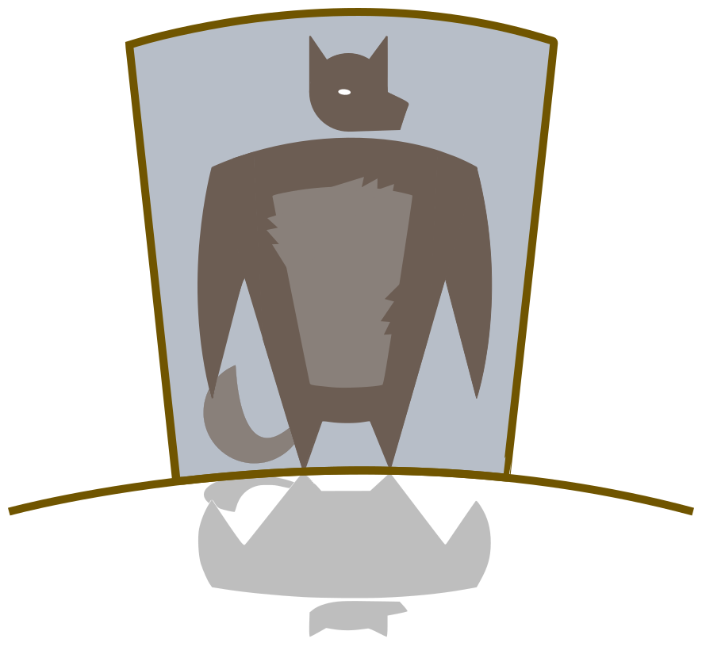

Everybody knows the story of the Three Little Pigs.
Or at least they think they do.
But I'll let you in on a little secret.
Nobody knows the real story,
because nobody has heard my side of the story.
I'm the wolf. Alexander T. Wolf.
You can call me Al.
I don't know how this whole Big Bad Wolf thing got started,
but it's all wrong.
Maybe it's because of our diet.
Hey, it's not my fault wolves eat cute little animals like bunnies and sheep and pigs.
That's just the way we are.
If cheeseburgers were cute, folks would probably think you were Big and Bad, too.
But like I was saying, the whole Big Bad Wolf thing is all wrong.
The real story is about a sneeze and a cup of sugar.
Way back in Once Upon a Time time,
I was making a birthday cake for my dear old granny.
I had a terrible sneezing cold.
I ran out of sugar.
So I walked down the street to ask my neighbor for a cup of sugar.
Now this neighbor was a pig.
And he wasn't too bright, either.
He had built his whole house out of straw.
Can you believe it?
I mean who in his right mind would build a house of straw?
So of course the minute I knocked on the door, it fell right in.
I didn't want to just walk into someone else's house.
So I called, "Little Pig, Little Pig, are you in?"
No answer.
I was just about to go home without the cup of sugar for my dear old granny's birthday cake.
